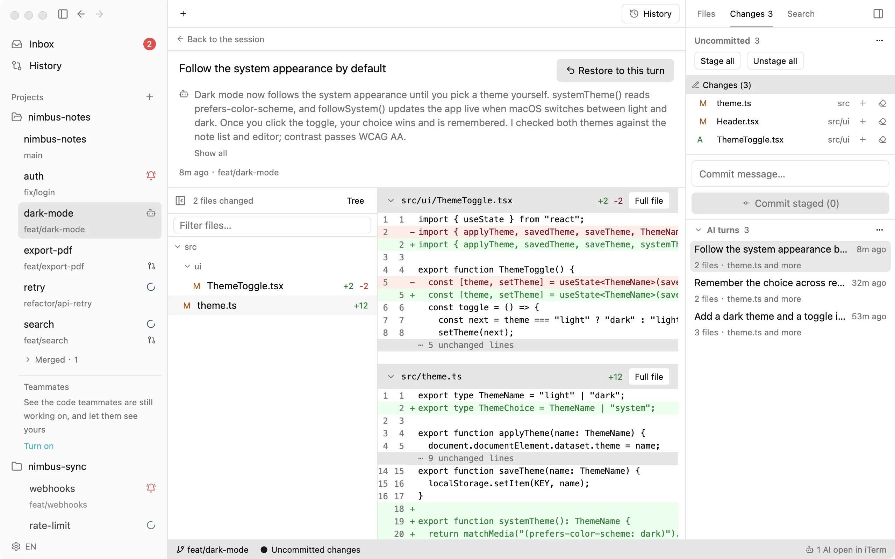
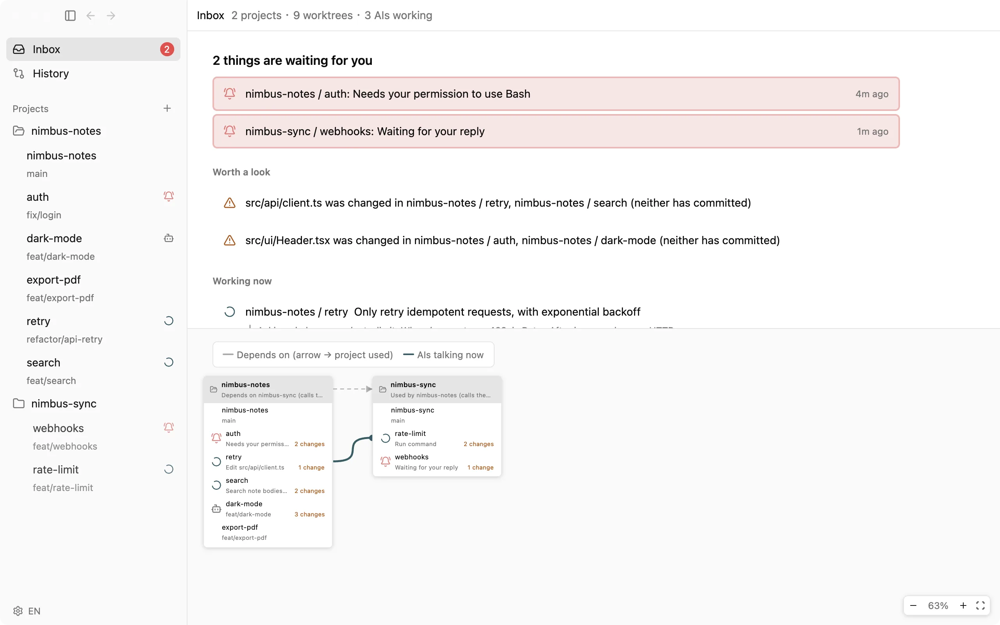

Personal
$0forever
Everything above, freeA full Git client too; Teammates is optional
- No sign-up
- gtree never uploads your code
See which agents are working, which are waiting, and what files they touched. You get pulled in only when one needs you.
Local features free forever · No sign-up · gtree never uploads your code · 24 MB download
Real screenshot · gtree 0.3.20
Your agents know what the others are changing, and agree before touching the same file.
When two worktrees touch the same file, the sidebar shows △. Click to compare.
Notified only when an agent needs a permission or an answer. Everything waiting on you sits at the top of the Inbox.

A turn broke something? One click takes you back.

Unsure about an API? Your agent asks the agent on the other side, without interrupting its work.
Not a web wrapper. A 24 MB native app.
Measured on an M4 Mac (macOS 15 · gtree 0.3.14). Open time is the median of 7 warm launches; memory is idle, as shown in Activity Monitor.
Terminals and tmux manage windows. They don’t know what the agents inside are doing, or which files they’re changing.
Push, pull, rebase, open PRs/MRs, browse history, compare branches — all in the same native window.
$0forever
Everything above, freeA full Git client too; Teammates is optional
Everything in Personal, plus:
Want it for your team, or need self-hosting? Tell us what you need.
Contact ussupport@dobbylab.comPersonal has no feature limits. Everything that runs on your Mac is free forever and won’t become paid; only team features that need a server will cost money.
No. gtree only reads and writes repositories on your Mac and never sends us your code, conversations or file paths; your own Claude Code or Codex talks to the AI, just as without gtree. Commits and pushes run through the git on your Mac, so your SSH keys and hooks work as usual.
Terminals only manage windows. gtree knows whether each agent is working or waiting on you and which files it changed, and pulls you in only when needed. The terminals are still there, running claude or codex itself.
Claude Code and Codex; connect each once in Settings. Other agents aren’t supported yet; tell us which one you want. Being asked from another project and continuing old conversations are Claude Code only for now.
Yes. Turn on Teammates (off by default) to see changes your teammates haven’t pushed, through your own git repository; your agent asks you before editing the same spot.
Yes. Restoring any turn, searching past conversations, new sessions that remember the last one, and the Git client all work just as well with a single agent.
Yes, and it’s macOS only. Installing Xcode is enough: no need to open Simulator.app, and no extra system permissions.
Only anonymous usage and version counts that can’t be tied to you; you can turn it off in Settings anytime.
It’s still in development, with no launch date or price yet. If your team wants it or needs self-hosting, email support@dobbylab.com.
Right now there’s only the Apple Silicon build for macOS. Intel Mac, Windows and Linux are planned, with no dates yet.
$curl -fsSL https://gtree.dobbylab.com/install.sh | bashDownload the .zip insteadmacOS will say it can’t verify the developer the first time: click Done, then open System Settings → Privacy & Security and click “Open Anyway” at the bottom. The command above skips this step.